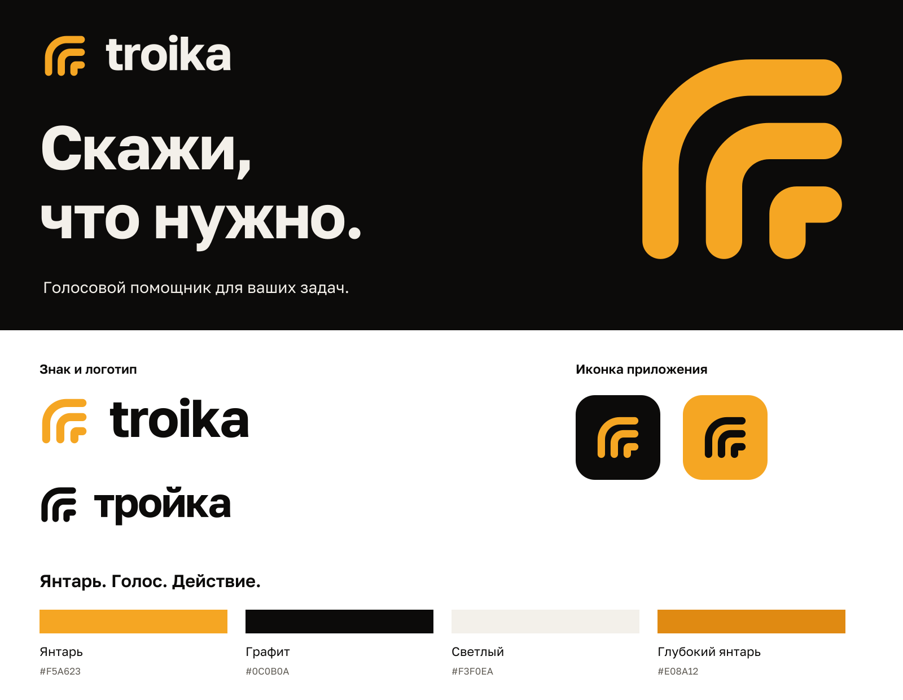

Troika. Фирменный стиль
Три линии: голос, задача, результат. Логотип, баннеры и иконки в векторе.
В оригиналах текст переведён в кривые. Для редактирования надписей есть отдельные SVG и шрифт.

Всё Логотипы Баннеры Приложение Иконки Паттерны Брендбук Логотипы mark-amber 112 × 112
mark-ink 112 × 112 mark-white 112 × 112
logo-en-primary 510 × 160
logo-en-reverse 510 × 160 logo-en-mono-black 510 × 160 logo-en-mono-white 510 × 160
wordmark-en-black 390 × 130
wordmark-en-white 390 × 130
logo-ru-primary 620 × 160
logo-ru-reverse 620 × 160 logo-ru-mono-black 620 × 160
logo-ru-mono-white 620 × 160
wordmark-ru-black 500 × 130 wordmark-ru-white 500 × 130 logo-stacked 440 × 370 Баннеры hero-1920x960 1920 × 960 social-1200x630 1200 × 630 post-1080x1080 1080 × 1080 post-1080x1350 1080 × 1350 story-1080x1920 1080 × 1920 cover-1590x530 1590 × 530 youtube-2560x1440 2560 × 1440 feature-1024x500 1024 × 500 web-1440x400 1440 × 400 email-1200x300 1200 × 300 desktop-1920x1080 1920 × 1080 Приложение
app-icon-dark 1024 × 1024
avatar-dark 512 × 512 app-icon-light 1024 × 1024 avatar-light 512 × 512 app-icon-amber 1024 × 1024 avatar-amber 512 × 512
adaptive-foreground 108 × 108
adaptive-monochrome 108 × 108
favicon 32 × 32 Иконки
voice 24 × 24
text 24 × 24
tasks 24 × 24
files 24 × 24
memory 24 × 24
search 24 × 24
phone 24 × 24
desktop 24 × 24
settings 24 × 24
profile 24 × 24
stop 24 × 24
shield 24 × 24
share 24 × 24
download 24 × 24
code 24 × 24
reminder 24 × 24
add 24 × 24
check 24 × 24 Паттерны voice-tile 448 × 448 voice-lines 1440 × 560 Брендбук page-01 595.28 × 841.89 page-02 595.28 × 841.89 page-03 595.28 × 841.89 page-04 595.28 × 841.89 page-05 595.28 × 841.89 page-06 595.28 × 841.89 page-07 595.28 × 841.89